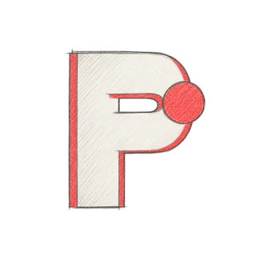
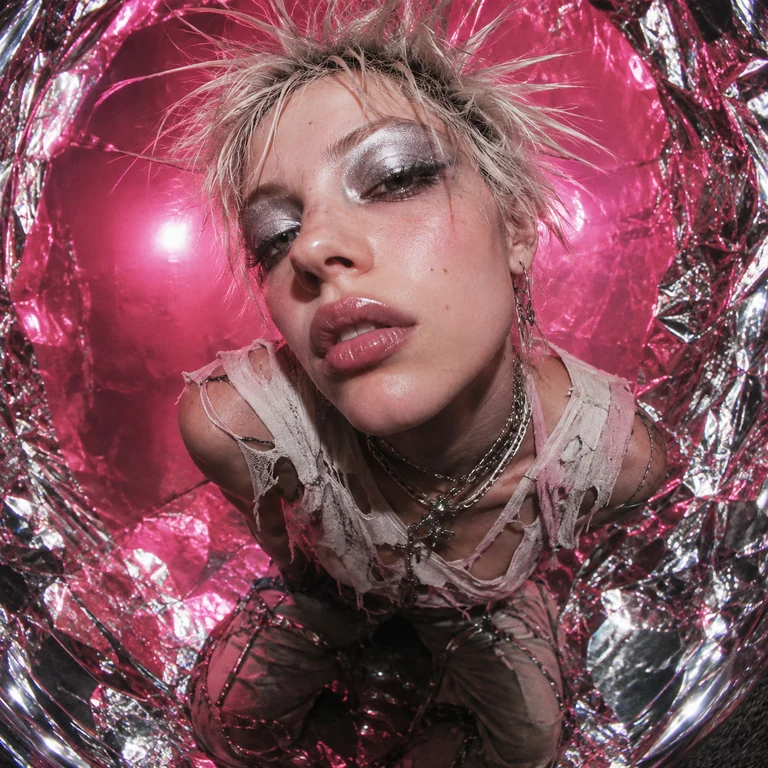

Feed
Search
Create
More
⌄
Records
Artists
Collection
0
Now playing
Your space
Listening budget
Porto Ledger
Dark
1/5
About this prototype
Demo listening budget
£6.40 / £10.00
You
Your space
Feed
Search your music ↗
Interactive prototype

Reformat
Audio: Kevin MacLeod · Side A
✓
In collection
↥
☷
Queue
Ready to play
0:00
7:09
READY
· LND-001
DEMO NODE
SIDE A / ALBUM
♪
▥
Voice command
Type a request
↗
×